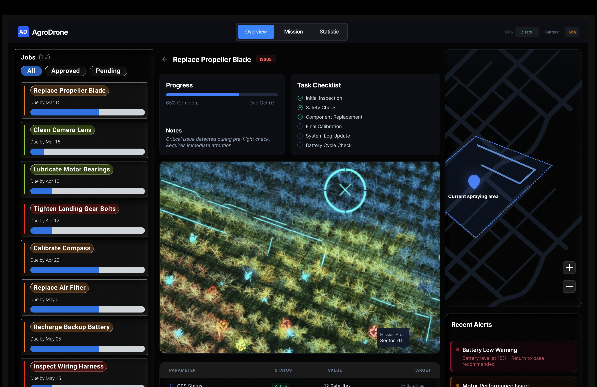
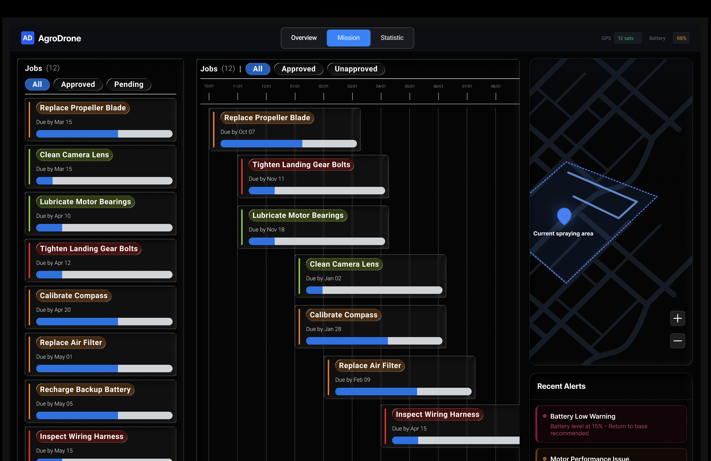
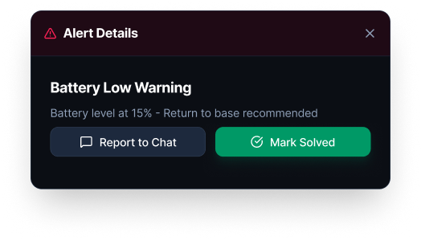
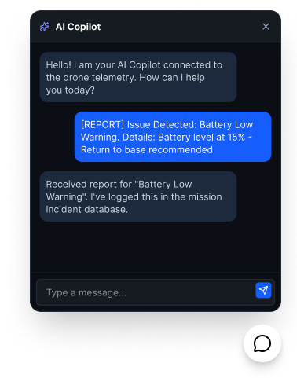
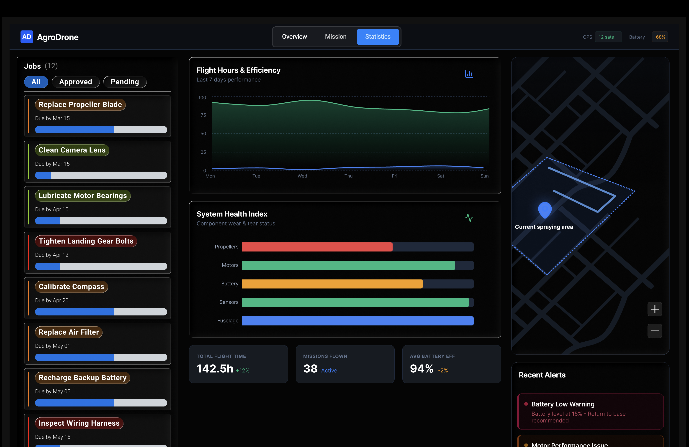

Modern agriculture operates at the scale of hundreds of acres per farm. This project explores how a unified UAV interface can turn vision, sensors, and modular payloads into a single, farmer-friendly control surface.
Modern farmers manage massive plots of land—averaging 466 acres. Manual monitoring of crop health, livestock, and soil is:
Labor-intensive field checks scale poorly as acreage grows.
Missed signals and inconsistent logs can lead to costly mistakes.
Multiple specialized drones + dashboards increase cost and training burden.
We designed an integrated ecosystem that combines Vision (heatmaps/AI), Sensors (soil/air quality), and Modularity (spraying/delivery) into one unified interface.

We didn’t just make it look good—we built it to perform in real operations. The UI applies core Human Factors principles: Attention, Perception, Memory, and Mental Models.

Principle of the Moving Part: the elevation slider mirrors real altitude changes.


| Feature | Design Principle | User Benefit |
|---|---|---|
| Global Navigation | Minimize Info Cost | Access all modules from one panel. |
| Weather Summary | Top-down Processing | Familiar symbols enable ~1-second interpretation. |
| Battery / Wind | Salience Compatibility | High-contrast icons remain visible in any lighting. |

The UAV adapts to the mission. The UI reflects this by updating the Attachments List dynamically.
Scroll-triggered demo: attachments panel shifts from Sprayer to Cargo and metrics change from Flow Rate to Load Weight.
Interaction idea: Switching payload types updates icons and the metric stack.
Fluid levels + nozzle health.
Tool weight + delivery status.
Methane + GPR data visualizations.
Used “Knowledge in the World” to keep critical data on screen—not in memory.
A multi-role system enables one drone to cover multiple mission types with a synchronized team.
Sensor-driven alerts (air quality / predator) improve protection for livestock and workers.
This project envisions technology bridging traditional farming and data science. By designing around mental models that mirror the physical world, we created a high-tech tool that feels intuitive to a farmer—not just a computer scientist.